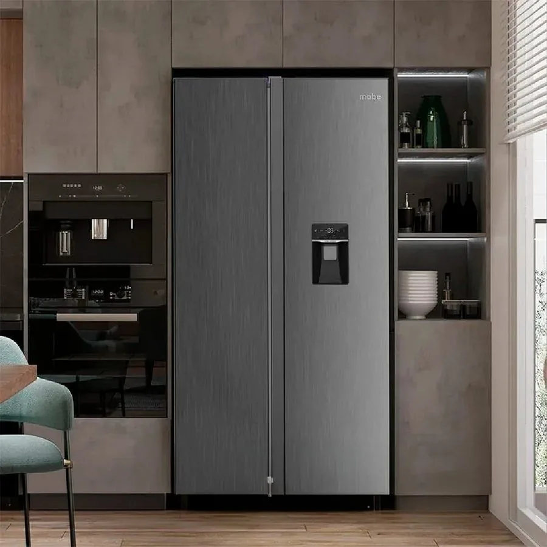
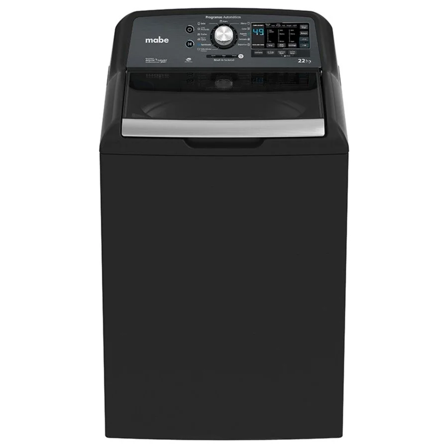

Servicio técnico a domicilio
Reparación de electrodomésticos Mabe en Quito
Reparamos refrigeradoras, lavadoras, secadoras, cocinas, hornos y más electrodomésticos Mabe en tu casa. Diagnóstico claro y costo antes de reparar.
- A domicilio en Quito
- Norte, centro, sur y valles
- Te explicamos la falla antes de reparar
 Mabe es una marca de su respectivo titular; este sitio no es operado por Mabe.
Mabe es una marca de su respectivo titular; este sitio no es operado por Mabe.Electrodomésticos Mabe que reparamos en Quito
Elige tu equipo para ver fallas comunes, mantenimiento y cómo pedir la visita.
 Reparación de refrigeradoras Mabe en QuitoReparamos refrigeradoras (neveras) Mabe a domicilio en Quito: de congelador superior, Side by Side, French Door y m…Ver servicio →
Reparación de refrigeradoras Mabe en QuitoReparamos refrigeradoras (neveras) Mabe a domicilio en Quito: de congelador superior, Side by Side, French Door y m…Ver servicio → Reparación de lavadoras Mabe en QuitoReparamos lavadoras Mabe de carga superior y de carga frontal a domicilio en Quito: no centrifugan, no desaguan, ha…Ver servicio →
Reparación de lavadoras Mabe en QuitoReparamos lavadoras Mabe de carga superior y de carga frontal a domicilio en Quito: no centrifugan, no desaguan, ha…Ver servicio → Reparación de secadoras Mabe en QuitoReparamos secadoras Mabe eléctricas y a gas a domicilio en Quito: no secan, no calientan, hacen ruido, tardan mucho…Ver servicio →
Reparación de secadoras Mabe en QuitoReparamos secadoras Mabe eléctricas y a gas a domicilio en Quito: no secan, no calientan, hacen ruido, tardan mucho…Ver servicio → Reparación de cocinas Mabe en QuitoReparamos cocinas Mabe a gas en Quito: hornillas que no encienden, llama amarilla o débil, perillas duras, chispero…Ver servicio →
Reparación de cocinas Mabe en QuitoReparamos cocinas Mabe a gas en Quito: hornillas que no encienden, llama amarilla o débil, perillas duras, chispero…Ver servicio → Reparación de hornos Mabe en QuitoReparamos hornos Mabe empotrables, eléctricos y a gas en Quito: no calientan, calientan de más o de menos, no encie…Ver servicio →
Reparación de hornos Mabe en QuitoReparamos hornos Mabe empotrables, eléctricos y a gas en Quito: no calientan, calientan de más o de menos, no encie…Ver servicio → Reparación de centros de lavado Mabe en QuitoReparamos centros de lavado (torres de lavado y secado) Mabe en Quito: no centrifugan, no secan, no desaguan, vibra…Ver servicio →Reparación de congeladores Mabe en QuitoReparamos congeladores Mabe horizontales y verticales en Quito: no congelan, forman demasiado hielo, hacen ruido, g…Ver servicio →Reparación de parrillas y encimeras Mabe en QuitoReparamos parrillas y encimeras Mabe a gas, eléctricas y de inducción en Quito: quemadores que no encienden, llama …Ver servicio →Reparación de campanas extractoras Mabe en QuitoReparamos campanas extractoras Mabe en Quito: no succionan bien, hacen ruido, vibran, tienen la luz o los controles…Ver servicio →Reparación de microondas Mabe en QuitoReparamos microondas Mabe en Quito: no calientan, hacen chispas, no giran el plato, no encienden o tienen la puerta…Ver servicio →Reparación de lavavajillas Mabe en QuitoReparamos lavavajillas Mabe en Quito: no lavan bien, no desaguan, no secan, gotean, no inician el ciclo o dejan res…Ver servicio →
Reparación de centros de lavado Mabe en QuitoReparamos centros de lavado (torres de lavado y secado) Mabe en Quito: no centrifugan, no secan, no desaguan, vibra…Ver servicio →Reparación de congeladores Mabe en QuitoReparamos congeladores Mabe horizontales y verticales en Quito: no congelan, forman demasiado hielo, hacen ruido, g…Ver servicio →Reparación de parrillas y encimeras Mabe en QuitoReparamos parrillas y encimeras Mabe a gas, eléctricas y de inducción en Quito: quemadores que no encienden, llama …Ver servicio →Reparación de campanas extractoras Mabe en QuitoReparamos campanas extractoras Mabe en Quito: no succionan bien, hacen ruido, vibran, tienen la luz o los controles…Ver servicio →Reparación de microondas Mabe en QuitoReparamos microondas Mabe en Quito: no calientan, hacen chispas, no giran el plato, no encienden o tienen la puerta…Ver servicio →Reparación de lavavajillas Mabe en QuitoReparamos lavavajillas Mabe en Quito: no lavan bien, no desaguan, no secan, gotean, no inician el ciclo o dejan res…Ver servicio →Lo que más se busca en Quito
Servicios, equipos y zonas: cada búsqueda tiene su página con respuestas claras.
¿Qué le pasa a tu equipo?
Estas son las fallas por las que más nos escriben. Cada una explica qué revisar antes de llamar.
Equipos Mabe que atendemos
Algunos de los modelos de la marca que revisamos a domicilio en Quito.




Imágenes de referencia de equipos Mabe.
Cómo trabajamos
- 1
Escríbenos
Por WhatsApp o llamada al 099 350 8191. Cuéntanos qué equipo es, la marca, el modelo y la falla.
- 2
Diagnóstico en tu casa
Probamos el equipo, identificamos la causa y te explicamos qué tiene.
- 3
Costo antes de reparar
Te informamos el costo y tú decides si continuamos.
- 4
Reparación y prueba
Reparamos y probamos que el equipo quede funcionando.
Zonas de Quito donde atendemos
Norte, centro, sur y valles. Si tu barrio no aparece, escríbenos.
Norte
Centro
Sur
Valles
Guías para entender y cuidar tus electrodomésticos
Gas, voltaje, limpieza y fallas explicadas para Quito.
Para quién es el servicio
Para tu casa
Refrigeradoras, lavadoras, secadoras, cocinas y hornos Mabe en tu hogar.
Para apartamentos y conjuntos
Coordinamos acceso y horario con la administración.
Para pequeños negocios
Equipos Mabe en oficinas, locales y cafeterías pequeñas.
Servicio técnico independiente
Reparamos electrodomésticos Mabe, pero no somos Mabe ni un centro de servicio autorizado. Si tu equipo está en garantía de fábrica, consulta primero sus condiciones con el fabricante.
Preguntas frecuentes
¿Hacen servicio técnico Mabe a domicilio en Quito?
Sí. Vamos a tu casa, apartamento u oficina en Quito: norte, centro, sur y valles. Escríbenos por WhatsApp con el equipo, el modelo y la falla.
¿Qué electrodomésticos Mabe reparan?
Refrigeradoras, congeladores, lavadoras, secadoras, centros de lavado, cocinas, hornos, parrillas, campanas, microondas y lavavajillas.
¿Son el servicio oficial de Mabe?
No. Somos un servicio técnico independiente y este sitio no es operado por Mabe. Si tu equipo está en garantía de fábrica, consulta primero las condiciones con el fabricante.
¿Cuánto cuesta la visita?
Escríbenos al WhatsApp con el equipo, el modelo y la falla; te confirmamos el costo de la visita antes de ir.
¿Dan el costo antes de reparar?
Sí. Primero diagnosticamos, te explicamos la falla y te informamos el costo antes de continuar.
¿Cómo pido el servicio?
Por WhatsApp o llamada al 099 350 8191 (+593 99 350 8191). Envía marca, modelo, falla, tu barrio y, si puedes, una foto de la etiqueta y un video corto.
¿Tu electrodoméstico está fallando?
Escríbenos por WhatsApp con la marca, el modelo y la falla. Te orientamos y coordinamos la visita.
Escribir por WhatsApp Llamar 099 350 8191